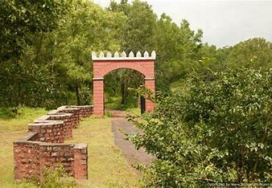

Samangad Fort
Samangad Fort, also known as Samanagad, is a historic fort located in Maharashtra, India, associated with the Maratha Empire and Chhatrapati Shivaji Maharaj. Here are some key details about Samangad Fort:
History
- Built By: Samangad Fort was built during the Maratha rule, strategically located to oversee the surrounding region.
- Significance: The fort played a crucial role in the defense and administration of the nearby territories under Shivaji Maharaj's rule.
Architecture
- Design: Samangad Fort is characterized by its sturdy walls, bastions, and strategic placement atop a hill, offering natural defense advantages.
- Notable Structures: Key attractions include the main entrance gate, temples, and water reservoirs within the fort premises.
Location
- Coordinates: Insert coordinates here
- Elevation: Samangad Fort is situated at an elevation of approximately X meters (X feet) above sea level.
- Nearby Attractions: Mention any nearby places of interest or towns.
Trekking
- Difficulty Level: Describe the difficulty level of trekking to the fort.
- Duration: Estimate the time required to reach the fort from the base.
- Best Time to Visit: Recommend the best season or time of year to visit Samangad Fort.
Points of Interest
- Panoramic Views: Highlight any scenic views or landscapes visible from the fort.
- Historic Structures: Mention any specific historic structures or remnants within the fort complex.
Samangad Fort stands as a testament to the valor and strategic foresight of Shivaji Maharaj, attracting history enthusiasts and trekkers alike to explore its rich heritage.